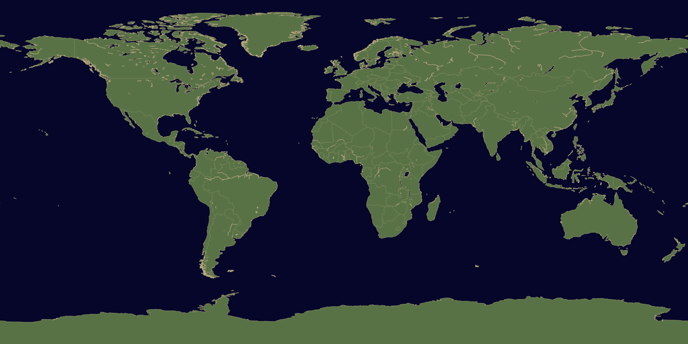

Global Coverage
Browse country-oriented concepts and compare how generated scenarios combine location, sector, occupation, and method. Country labels provide context, not evidence that an occupation exists there.
Discover tools for exploring careers, names, languages, technology, products, books, music, and the future.
GENERATE DATA ↗
Explore topics across creative and professional fields. Browse results, preview records, and export the information you need for your next project.

Discover ideas for careers, coding, business, food, future history, books, and music in one place.
Results are intended for exploration and creative use.
EXPLORE THE GENERATORA geographic perspective on conceptual work, industries, and emerging ideas.
Browse country-oriented concepts and compare how generated scenarios combine location, sector, occupation, and method. Country labels provide context, not evidence that an occupation exists there.
Explore combinations spanning agriculture, education, technology, healthcare, arts, commerce, and other fields, including ideas for potential future activities.
Use stable numerical identifiers to revisit a generated record, examine its fields, and export results for your own analysis.

Explore ideas beyond familiar boundaries. From imagined futures to creative concepts, Zharief.com brings structured inspiration together in one place.
Find ideas, preview results, and export your selections.
Explore and revisit results using their reference IDs.
Inspect a record before creating a larger CSV export. Review results for relevance and accuracy before using them in a project.
Export structured records for offline analysis and download available archive files. Review exported content before publication or professional use.
EXPLORE / CREATE / EXPORT
Choose a collection, set your preferences, and see what you discover.
1–100,000 records per CSV export.
Your results will appear here.
Coding Dictionary includes curated reference concepts and generated worked-example variations; 50,000 entries do not mean 50,000 distinct programming concepts. All records are synthetic examples, not verified job listings, real identities, or real email accounts. Language examples use a bundled, limited multilingual dictionary; 195-country selection does not mean full translation coverage for every country or language. Passwords are test data, not credentials for real accounts.
LIVE FROM SPACE · SEN
Watch the Earth live. The broadcast starts automatically with sound muted; tap the video’s speaker control to listen.
ABOUT ZHARIEF
Zharief brings together creative and practical generators for exploring careers, names, technology, products, food, literature, and music.
Results are provided for inspiration, testing, learning, and creative projects. They are not verified listings or guaranteed original works.
Review important information independently before relying on it for professional or commercial decisions.